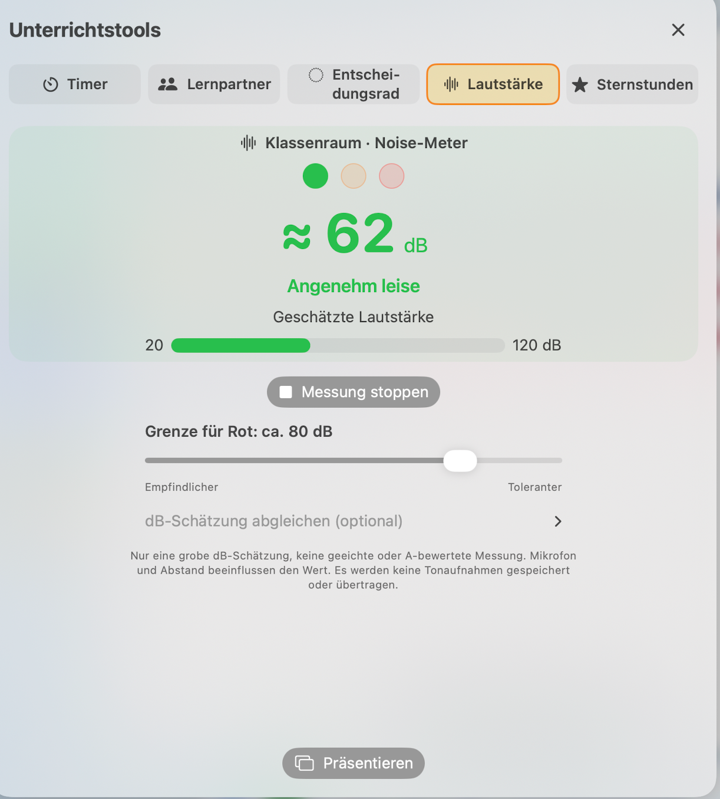

Klasse & Raum
Schüler anlegen oder importieren. Tische verschieben, drehen und an deinen Raum anpassen.
Sitzpläne gestalten, Schüler verteilen und Unterrichtswerkzeuge an einem Ort nutzen – mit Sitzplan Manager Pro für Mac und iPad.
Zur Anleitung ↗ Hilfe findenSitzplan Manager Pro · für Mac & iPad
Sitzplan Manager Pro für iPad
QR-Code mit dem iPhone oder iPad scannen
Schüler anlegen oder importieren. Tische verschieben, drehen und an deinen Raum anpassen.
Sitzregeln berücksichtigen, Plätze tauschen und einzelne Schüler fixieren. Frühere Sitzpläne über den Verlauf aufrufen.
Zufallsschüler, Teams, Timer, Lernpartner, Entscheidungsrad, Stundenplan und Toilettenzeiten unterstützen den Unterrichtsalltag.
Das neue Klassenraum-Noise-Meter ergänzt die Unterrichtswerkzeuge für Mac und iPad: Eine Ampel zeigt, wann es Zeit wird, etwas leiser zu werden.
Die Anzeige dient der Orientierung. Sie ist eine grobe Schätzung, keine geeichte oder A-bewertete Schallpegelmessung.
Noise-Meter kennenlernen →
So richtest du deine Klasse ein, verteilst Sitzplätze und nutzt die Werkzeuge im Unterricht.
Die Anleitung für Mac und iPad, Antworten auf häufige Fragen und Informationen zum Umgang mit Daten.
Sitzplan Manager Pro für iPad ist jetzt im Apple App Store verfügbar. Weitere Plattformen folgen.